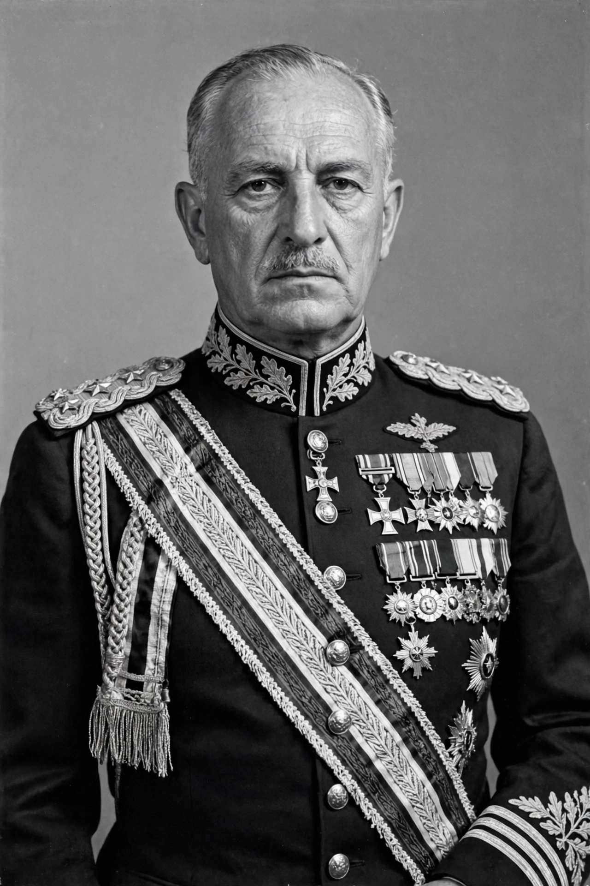

| Francisco Franco | |
|---|---|
 | |
| Born | 4 December 1892, Ferrol, Spain |
| Died | 20 November 1975 (aged 82), Madrid, Spain |
| Title | Head of State of Spain (1936/1939–1975); Generalísimo |
| Political party | FET y de las JONS (Movimiento Nacional) |
| Successor | Juan Carlos I (as King of Spain) |
Francisco Franco Bahamonde (4 December 1892 – 20 November 1975) was a Spanish military general who ruled Spain as a dictator from 1939 until his death in 1975. He led the Nationalist forces that overthrew the Second Spanish Republic in the Spanish Civil War (1936–1939), in collaboration with Nazi Germany and Fascist Italy, and thereafter presided over Spain as its authoritarian head of state, styled Caudillo.
Franco was born in Ferrol, Galicia, into a naval family. He entered the Toledo Infantry Academy at fourteen and made his name in the colonial wars in Spanish Morocco, becoming the youngest general in Europe in 1926 and director of the General Military Academy at Zaragoza. After the military rising of July 1936 against the Republic, Franco was chosen as leader of the Nationalist forces and head of the insurgent government.
Following victory in 1939, Franco's regime suppressed dissent through imprisonment, executions and exile, and imposed a nationalist, Catholic and centralised order. Spain remained neutral in name during the Second World War, though Franco met Hitler at Hendaye in 1940 and sent the Blue Division to the Eastern Front. After 1945 the regime was initially isolated, but Cold War anti-communism brought rapprochement with the United States, including the 1953 Pacts of Madrid. From 1959 technocratic ministers pursued the Stabilisation Plan, opening Spain to tourism, emigration and foreign investment and producing rapid economic growth known as the Spanish miracle, alongside continued political repression.
In 1969 Franco designated Prince Juan Carlos as his successor as head of state in a restored monarchy. Franco died on 20 November 1975; Juan Carlos became king and, contrary to Francoist expectations, presided over Spain's transition to democracy. The attempted coup of 23 February 1981 was the last major Francoist reaction. In 2019 Franco's remains were exhumed from the Valley of the Fallen and reburied in a Madrid cemetery.